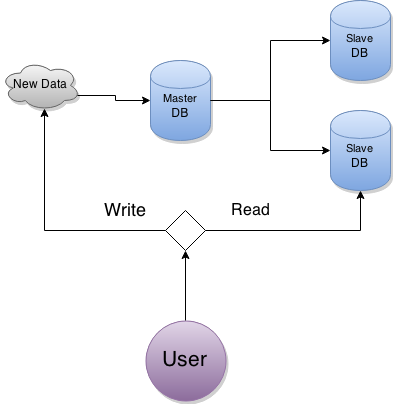

Mysql Replication 是一個資料同步的功能，可以讓你將 databases 的資料同步至另一台 MySql Server ，用來作分流，或是備份，Replication 非常實用，就算網站只是一個小小的 Blog 最好也要設定 Replication，因為我們無法預知機器什麼時候會出現問題，當有一天機器的硬碟突然掛點，你就只能從前一天的備份將資料救回來，像一般系統每天最多只會備份一次，那代表你最多有可能 24 小時內的資料是救不回來的，而如果你有設定好 Replication ，那麼最多只有幾分鐘的資料救不回來 ，甚至資料可以百分之百的還原。
名詞解釋
- Master : 是指提供寫入的 server，Replication 系統中只能有一台機器可以新增，修改資料，而這台機器，我們稱之為 Master 。
- Slave : 是指 read only 的 server ，只用來提供 user 讀取資料，本身不提供資料寫入。
一個大型系統，通常會需要多台 Database 來應付線上的流量，這時你就會需要設定 Replication ，將 Database 的資料同步到多台 MySql slave server ，讓每一台 slave 都擁有相同的資料，上圖中，可以看到當 User 要寫入一筆新的資料時，系統會由 Master 負責寫入，然後再透過 Replication 機制，將新資料轉給 Slave DB ，而其它的 User 就可以從 Slave DB 中讀取到新的資料， Slave DB 可以擁有 1 ~ N 台機器，可以有效的分配流量。
設定 Master 機器
請打開 my.cnf 設定檔，並設定 log-bin, server-id, binlog_do_db 這三個值。
當 Master 的資料被修改後，Mysql 就會寫一份 log 到 mysql-bin.0001 這個檔案，這個檔案非常重要，所有的 replication 行為都要靠這個檔案來完成，而我們可以透過設定 log-bin ，來改變其檔名。
server-id 是一個代號，每一台 Mysql 都有一個獨立的 ID ，這個 ID 必需手動設定，而且一定要確保每一台 Mysql 的 ID 都是不同的。
binlog_do_db 這個設定是指，你要同步的 database 名稱，如果你有多個 database ，那麼可以寫成兩行。
- [mysqld]
- log-bin = mysql-bin
- server-id = 1
- binlog_do_db = test1
- binlog_do_db = test2
修改完成後要重啟 Mysql 。
增加新帳號給 slave 連接
- CREATE USER 'repl'@'%' IDENTIFIED BY 'password???';
- GRANT REPLICATION SLAVE ON *.* TO 'repl'@'%';
將 master 資料搬到 slave
在系統自動同步功能設定完成前，我們得先手動將資料搬到 slave，也就是說第一次的同步，必需手動來完成。
首先用 mysqldump 的指令將資料庫的資料存入 all.sql
mysqldump -uroot --all-databases -p >~/all.sql
我在使用 Mysql Dump 時，有發生 general_log is not exist 與 slow_log is not exist 的問題，解決方式就是手動去建立這兩個 table。
- use mysql;
- CREATE TABLE `general_log` (
- `event_time` timestamp NOT NULL DEFAULT CURRENT_TIMESTAMP ON UPDATE CURRENT_TIMESTAMP,
- `user_host` mediumtext NOT NULL,
- `thread_id` int(11) NOT NULL,
- `server_id` int(10) unsigned NOT NULL,
- `command_type` varchar(64) NOT NULL,
- `argument` mediumtext NOT NULL
- ) ENGINE=CSV DEFAULT CHARSET=utf8 COMMENT='General log';
- CREATE TABLE `slow_log` (
- `start_time` timestamp NOT NULL DEFAULT CURRENT_TIMESTAMP ON UPDATE CURRENT_TIMESTAMP,
- `user_host` mediumtext NOT NULL,
- `query_time` time NOT NULL,
- `lock_time` time NOT NULL,
- `rows_sent` int(11) NOT NULL,
- `rows_examined` int(11) NOT NULL,
- `db` varchar(512) NOT NULL,
- `last_insert_id` int(11) NOT NULL,
- `insert_id` int(11) NOT NULL,
- `server_id` int(10) unsigned NOT NULL,
- `sql_text` mediumtext NOT NULL
- ) ENGINE=CSV DEFAULT CHARSET=utf8 COMMENT='just only a slow log';
再來你要找出目前 Master Mysql 資料的情況，在 Master 使用指令 show master status
show master status
| File | Position | Binlog_Do_DB | Binlog_Ignore_DB |
|---|---|---|---|
| mysql-bin.000028 | 24473 | test1,test2 | manual,mysql |
請記下 File 與 Position 的值，分別是 mysql-bin.000028 與 24473
Slave 機器設定
你得先修改 slave 機器中的 my.cnf 設定檔，設定一個與 master 不同值的 server-id ，這裡我就設定成 2 ，另外我加了一個 read_only = 1 ，因為 slave 的機器，只需要同步即可，不需要被其他 process 寫入資料，修改完成後要重啟 Mysql 。
- [mysqld]
- server-id=2
- relay-log=mysqld-relay-bin
- read_only=1
- binlog_do_db = test1
- binlog_do_db = test2
還記得在 Master 機器 dump 下來的 all.sql 嗎，現在你要在 slave 的機器中，將 all.sql 的資料匯入 mysql ，你可以用下列的指令。
mysql -h localhost -u root --default-character-set=utf8 -p < all.sql
最後你要在 slave 的 mysql 中，設定 Master Mysql 的帳號，密碼與 hostname，這一步完成後， Slave Mysql 就會開始同步囉 ，你可以查看 relay-log.info 這個 log 是否有更新，裡面會記錄 replication 的進度。
- # 先停掉 replication
- stop slave;
- # 設定下一次 replication 的起始位置
- CHANGE MASTER TO
- MASTER_HOST='master.host.com',
- MASTER_USER='repl',
- MASTER_PASSWORD='passowrd',
- MASTER_LOG_FILE='mysql-bin.000028',
- MASTER_LOG_POS=24473,
- MASTER_PORT=3306;
- #再啟用 slave
- start slave;
這些的設定也可以寫在 my.cnf ，但是密碼就變成明碼存在 my.cnf 了
- [mysqld]
- server-id=2
- master-host=master.com
- master-port=3306
- master-user=root
- master-password=xxxxxx
- master-connect-retry=60
啟動 Replication 後就可以去檢查 Mysql 的 log，看看 slave 機器是否有正確的更新，我的 Mysql slave 會將 sync 過來的資訊寫在檔案 "/var/log/mariadb/mariadb.log" ，如果 Replication 過程中有碰到錯誤 ，你會在 log 中看到類似下面這種錯誤 。
- 160403 17:06:17 [Warning] Slave: Operation CREATE USER failed for 'xx'@'zz' Error_code: 1396
- 160403 17:06:17 [ERROR] Error running query, slave SQL thread aborted. Fix the problem, and restart the slave SQL thread with "SLAVE START". We stopped at log 'mysql-bin.000017' position 35164
這個錯誤發生的原因是，我在 Slave 設定完下次開始 sync 的 log position 之後，我又到 master 機器新增一個 user ，而這個 user 剛好在 slave 已經存在，造成 slave 無法執行這一個 SQL Statement ，解決方式為跳過這一個 SQL 語法，必須先登入 slave MySQL Server ，輸入下面這三句 SQL 指令。
- stop slave;
- SET GLOBAL sql_slave_skip_counter = 1;
- start slave;